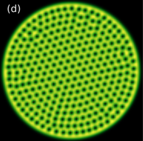

Selected Publications
-
Quantum Monte Carlo and Stabilizer States – Bhilahari Jeevanesan. arXiv:2408.09978 (2024). arXiv
-
 Krylov Spread Complexity of Quantum-Walks – Bhilahari Jeevanesan. Phys. Rev. A 110, 032206 (2024). Journal
Krylov Spread Complexity of Quantum-Walks – Bhilahari Jeevanesan. Phys. Rev. A 110, 032206 (2024). Journal -
Quantum Scar States in Coupled Random Graph Models – Bhilahari Jeevanesan. Phys. Rev. B 108, 075131 (2023). Journal
-

Surface waves and bulk Ruderman mode of a bosonic superfluid vortex crystal in the lowest Landau level – Bhilahari Jeevanesan, Claudio Benzoni, Sergej Moroz. Phys. Rev. B 106, 144501 (2022). Journal
-
 Rayleigh waves and cyclotron surface modes of gyroscopic metamaterials – Filip Marijanović, Sergej Moroz, Bhilahari Jeevanesan. Phys. Rev. B 106, 024308 (2021). Journal
Rayleigh waves and cyclotron surface modes of gyroscopic metamaterials – Filip Marijanović, Sergej Moroz, Bhilahari Jeevanesan. Phys. Rev. B 106, 024308 (2021). Journal -
Quantum phases of two-dimensional \(\mathbb{Z}_2\) gauge theory coupled to single-component fermion matter – Umberto Borla, Bhilahari Jeevanesan, Frank Pollmann, Sergej Moroz. Phys. Rev. B 105, 075132 (2022). Journal
-
 Rayleigh Edge Waves in Two-Dimensional Crystals with Lorentz Forces -- from Skyrmion Crystals to Gyroscopic Media – Claudio Benzoni, Bhilahari Jeevanesan, Sergej Moroz. Phys. Rev. B 104, 024435 (2021). Journal
Rayleigh Edge Waves in Two-Dimensional Crystals with Lorentz Forces -- from Skyrmion Crystals to Gyroscopic Media – Claudio Benzoni, Bhilahari Jeevanesan, Sergej Moroz. Phys. Rev. B 104, 024435 (2021). Journal -
 Thermodynamics of two-dimensional bosons in the lowest Landau level – Bhilahari Jeevanesan, Sergej Moroz. Phys. Rev. Research 2, 033323 (2020). Journal
Thermodynamics of two-dimensional bosons in the lowest Landau level – Bhilahari Jeevanesan, Sergej Moroz. Phys. Rev. Research 2, 033323 (2020). Journal -
Enhanced nematic fluctuations near an antiferromagnetic Mott insulator and possible application to high-\(T_{c}\) cuprates – Peter P. Orth, Bhilahari Jeevanesan, Rafael M. Fernandes, Jörg Schmalian. npj Quantum Materials 4:4 (2019). Journal
-
 Critical Phenomena in Hyperbolic Space – Karim Mnasri, Bhilahari Jeevanesan, Jörg Schmalian. Phys. Rev. B 92, 134423 (2015). Journal
Critical Phenomena in Hyperbolic Space – Karim Mnasri, Bhilahari Jeevanesan, Jörg Schmalian. Phys. Rev. B 92, 134423 (2015). Journal -
 Emergent Power-Law Phase in the 2D Heisenberg Windmill Antiferromagnet: A Computational Experiment – Bhilahari Jeevanesan, Premala Chandra, Piers Coleman, Peter P. Orth. Phys. Rev. Lett. 115, 177201 (2015). Journal
Emergent Power-Law Phase in the 2D Heisenberg Windmill Antiferromagnet: A Computational Experiment – Bhilahari Jeevanesan, Premala Chandra, Piers Coleman, Peter P. Orth. Phys. Rev. Lett. 115, 177201 (2015). Journal -
 Classical ground states of Heisenberg and ùëã‚Å¢ùëå antiferromagnets on the windmill lattice ‚Äì Bhilahari Jeevanesan, Peter P. Orth. Phys. Rev. B 90, 144435 (2014). Journal
Classical ground states of Heisenberg and ùëã‚Å¢ùëå antiferromagnets on the windmill lattice ‚Äì Bhilahari Jeevanesan, Peter P. Orth. Phys. Rev. B 90, 144435 (2014). Journal